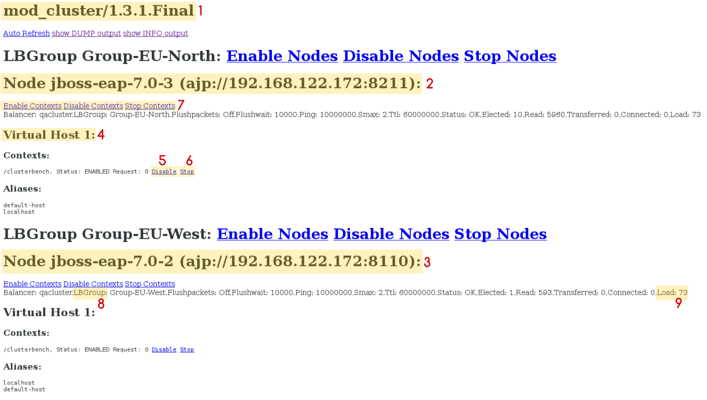

Session replication ensures that client sessions of distributable applications are not disrupted by failovers of nodes in a cluster. Each node in the cluster shares information about ongoing sessions, and can take over sessions if a node disappears.
Session replication is the mechanism by which mod_cluster, mod_jk, mod_proxy, ISAPI, and NSAPI clusters provide high availability.
To take advantage of JBoss EAP High Availability (HA) features and enable clustering of your web application, you must configure your application to be distributable. If your application is not marked as distributable, its sessions will never be distributed.
Add the <distributable/> element inside the <web-app> tag of your application’s web.xml descriptor file:
<?xml version="1.0"?>
<web-app xmlns="http://java.sun.com/xml/ns/j2ee"
xmlns:xsi="http://www.w3.org/2001/XMLSchema-instance"
xsi:schemaLocation="http://java.sun.com/xml/ns/j2ee
http://java.sun.com/xml/ns/j2ee/web-app_3_0.xsd"
version="3.0">
<distributable/>
</web-app>
Next, if desired, modify the default replication behavior. If you want to change any of the values affecting session replication, you can override them inside a <replication-config> element inside <jboss-web> in an application’s WEB-INF/jboss-web.xml file. For a given element, only include it if you want to override the defaults.
<replication-config> Values
<jboss-web xmlns="http://www.jboss.com/xml/ns/javaee"
xmlns:xsi="http://www.w3.org/2001/XMLSchema-instance"
xsi:schemaLocation="http://www.jboss.com/xml/ns/javaee http://www.jboss.org/j2ee/schema/jboss-web_10_0.xsd">
<replication-config>
<replication-granularity>SESSION</replication-granularity>
</replication-config>
</jboss-web>
The <replication-granularity> parameter determines the granularity of data that is replicated. It defaults to SESSION, but can be set to ATTRIBUTE to increase performance on sessions where most attributes remain unchanged.
Valid values for <replication-granularity> can be :
SESSION: The default value. The entire session object is replicated if any attribute is dirty. This policy is required if an object reference is shared by multiple session attributes. The shared object references are maintained on remote nodes since the entire session is serialized in one unit.
ATTRIBUTE: This is only for dirty attributes in the session and for some session data, such as the last-accessed timestamp.
For JBoss EAP 7, session replication is triggered when the session is mutated or when any mutable attribute of the session is accessed. Session attributes are assumed to be mutable unless one of the following is true:
The value is a known immutable value:
null
java.util.Collections.EMPTY_LIST, EMPTY_MAP, EMPTY_SET
The value type is or implements a known immutable type:
java.lang.Boolean, Character, Byte, Short, Integer, Long, Float, Double
java.lang.Class, Enum, StackTraceElement, String
java.io.File, java.nio.file.Path
java.math.BigDecimal, BigInteger, MathContext
java.net.Inet4Address, Inet6Address, InetSocketAddress, URI, URL
java.security.Permission
java.util.Currency, Locale, TimeZone, UUID
java.time.Clock, Duration, Instant, LocalDate, LocalDateTime, LocalTime, MonthDay, Period, Year, YearMonth, ZoneId, ZoneOffset, ZonedDateTime
java.time.chrono.ChronoLocalDate, Chronology, Era
java.time.format.DateTimeFormatter, DecimalStyle
java.time.temporal.TemporalField, TemporalUnit, ValueRange, WeekFields
java.time.zone.ZoneOffsetTransition, ZoneOffsetTransitionRule, ZoneRules
The value type is annotated with:
@org.wildfly.clustering.web.annotation.Immutable
@net.jcip.annotations.Immutable
Passivation is the process of controlling memory usage by removing relatively unused sessions from memory while storing them in persistent storage.
Activation is when passivated data is retrieved from persisted storage and put back into memory.
Passivation occurs at different times in an HTTP session’s lifetime:
A session is passivated if the number of active sessions exceeds a configurable maximum.
Sessions are always passivated using a Least Recently Used (LRU) algorithm.
HTTP session passivation is configured in your application’s WEB-INF/jboss-web.xml and META-INF/jboss-web.xml file.
jboss-web.xml File
<jboss-web xmlns="http://www.jboss.com/xml/ns/javaee"
xmlns:xsi="http://www.w3.org/2001/XMLSchema-instance"
xsi:schemaLocation="http://www.jboss.com/xml/ns/javaee http://www.jboss.org/j2ee/schema/jboss-web_10_0.xsd">
<max-active-sessions>20</max-active-sessions>
</jboss-web>
The <max-active-sessions> element dictates the maximum number of active sessions allowed, and is used to enable session passivation. If session creation would cause the number of active sessions to exceed <max-active-sessions>, then the oldest session known to the session manager will passivate to make room for the new session.
The total number of sessions in memory includes sessions replicated from other cluster nodes that are not being accessed on this node. Take this into account when setting <max-active-sessions>. The number of sessions replicated from other nodes also depends on whether REPL or DIST cache mode is enabled. In REPL cache mode, each session is replicated to each node. In DIST cache mode, each session is replicated only to the number of nodes specified by the owners parameter. See Configure the Cache Mode in the JBoss EAP Configuration Guide for information on configuring session cache modes. For example, consider an eight node cluster, where each node handles requests from 100 users. With REPL cache mode, each node would store 800 sessions in memory. With DIST cache mode enabled, and the default owners setting of 2, each node stores 200 sessions in memory.
JBoss EAP 7 introduced a refined public clustering API for use by applications. The new services are designed to be lightweight, easily injectable, with no external dependencies.
org.wildfly.clustering.group.GroupThe group service provides a mechanism to view the cluster topology for a JGroups channel, and to be notified when the topology changes.
@Resource(lookup = "java:jboss/clustering/group/channel-name") private Group channelGroup;
org.wildfly.clustering.dispatcher.CommandDispatcher
The CommandDispatcherFactory service provides a mechanism to create a dispatcher for executing commands on nodes in the cluster. The resulting CommandDispatcher is a command-pattern analog to the reflection-based GroupRpcDispatcher from previous JBoss EAP releases.
@Resource(lookup = "java:jboss/clustering/dispatcher/channel-name")
private CommandDispatcherFactory factory;
public void foo() {
String context = "Hello world!";
// Exclude node1 and node3 from the executeOnCluster
try (CommandDispatcher<String> dispatcher = this.factory.createCommandDispatcher(context)) {
dispatcher.executeOnGroup(new StdOutCommand(), node1, node3);
}
}
public static class StdOutCommand implements Command<Void, String> {
@Override
public Void execute(String context) {
System.out.println(context);
return null;
}
}A clustered singleton service, also known as a high-availability (HA) singleton, is a service deployed on multiple nodes in a cluster. The service is provided on only one of the nodes. The node running the singleton service is usually called the master node.
When the master node either fails or shuts down, another master is selected from the remaining nodes and the service is restarted on the new master. Other than a brief interval when one master has stopped and another has yet to take over, the service is provided by one, and only one, node.
JBoss EAP 7 introduced a new public API for building singleton services that simplifies the process significantly.
The SingletonServiceBuilder implementation installs its services so they will start asynchronously, preventing deadlocking of the Modular Service Container (MSC).
If there is a preference for which node should start the HA singleton, you can set the election policy in the ServiceActivator class.
JBoss EAP provides two election policies:
Simple election policy
The simple election policy selects a master node based on the relative age. The required age is configured in the position property, which is the index in the list of available nodes, where:
Position can also be negative to indicate the youngest nodes.
Random election policy
The random election policy elects a random member to be the provider of a singleton service.
An HA singleton service election policy may optionally specify one or more preferred servers. This preferred server, when available, will be the master for all singleton applications under that policy.
You can define the preferences either through the node name or through the outbound socket binding name.
Node preferences always take precedence over the results of an election policy.
By default, JBoss EAP high availability configurations provide a simple election policy named default with no preferred server. You can set the preference by creating a custom policy and defining the preferred server.
A potential issue with a singleton service arises when there is a network partition. In this situation, also known as the split-brain scenario, subsets of nodes cannot communicate with each other. Each set of servers consider all servers from the other set failed and continue to work as the surviving cluster. This might result in data consistency issues.
JBoss EAP allows you to specify a quorum in the election policy to prevent the split-brain scenario. The quorum specifies a minimum number of nodes to be present before a singleton provider election can take place.
A typical deployment scenario uses a quorum of N/2 + 1, where N is the anticipated cluster size. This value can be updated at runtime, and will immediately affect any active singleton services.
The following is an abbreviated example of the steps required to create and deploy an application as a cluster-wide singleton service. This example demonstrates a querying service that regularly queries a singleton service to get the name of the node on which it is running.
To see the singleton behavior, you must deploy the application to at least two servers. It is transparent whether the singleton service is running on the same node or whether the value is obtained remotely.
Create the SingletonService class. The getValue() method, which is called by the querying service, provides information about the node on which it is running.
class SingletonService implements Service<Node> {
private Logger LOG = Logger.getLogger(this.getClass());
private InjectedValue<Group> group;
SingletonService(InjectedValue<Group> group) {
this.group = group;
}
@Override
public void start(StartContext context) throws StartException {
LOG.infof("Singleton service is starting on node '%s'.", this.group.getValue().getLocalNode());
}
@Override
public void stop(StopContext context) {
LOG.infof("Singleton service is stopping on node '%s'.", this.group.getValue().getLocalNode());
}
@Override
public Node getValue() throws IllegalStateException, IllegalArgumentException {
return this.group.getValue().getLocalNode();
}
}
Create the querying service. It calls the getValue() method of the singleton service to get the name of the node on which it is running, and then writes the result to the server log.
class QueryingService implements Service<Void> {
private Logger LOG = Logger.getLogger(this.getClass());
private ScheduledExecutorService executor;
@Override
public void start(StartContext context) throws StartException {
LOG.info("Querying service is starting.");
executor = Executors.newSingleThreadScheduledExecutor();
executor.scheduleAtFixedRate(() -> {
@SuppressWarnings("unchecked")
ServiceController<Node> service = (ServiceController<Node>) context.getController().getServiceContainer()
.getService(ServiceActivator.SINGLETON_SERVICE_NAME);
try {
Node node = service.awaitValue(5, TimeUnit.SECONDS);
LOG.infof("Singleton service is running on node '%s'.", node);
} catch (InterruptedException | TimeoutException | IllegalStateException e) {
LOG.warn("Failed to query singleton service.");
}
}, 5, 5, TimeUnit.SECONDS);
}
@Override
public void stop(StopContext context) {
LOG.info("Querying service is stopping.");
executor.shutdown();
}
@Override
public Void getValue() throws IllegalStateException, IllegalArgumentException {
return null;
}
}
Implement the ServiceActivator class to build and install both the singleton service and the querying service.
public class ServiceActivator implements org.jboss.msc.service.ServiceActivator {
private final Logger LOG = Logger.getLogger(ServiceActivator.class);
static final ServiceName SINGLETON_SERVICE_NAME =
ServiceName.parse("org.jboss.as.quickstarts.ha.singleton.service.primary-only");
private static final ServiceName QUERYING_SERVICE_NAME =
ServiceName.parse("org.jboss.as.quickstarts.ha.singleton.service.primary-only.querying");
@Override
public void activate(ServiceActivatorContext serviceActivatorContext) {
try {
SingletonPolicy policy = (SingletonPolicy) serviceActivatorContext
.getServiceRegistry()
.getRequiredService(ServiceName.parse(SingletonDefaultRequirement.SINGLETON_POLICY.getName()))
.awaitValue();
InjectedValue<Group> group = new InjectedValue<>();
Service<Node> service = new SingletonService(group);
policy.createSingletonServiceBuilder(SINGLETON_SERVICE_NAME, service)
.build(serviceActivatorContext.getServiceTarget())
.addDependency(ServiceName.parse("org.wildfly.clustering.default-group"), Group.class, group)
.install();
serviceActivatorContext.getServiceTarget()
.addService(QUERYING_SERVICE_NAME, new QueryingService())
.setInitialMode(ServiceController.Mode.ACTIVE)
.install();
LOG.info("Singleton and querying services activated.");
} catch (InterruptedException e) {
throw new ServiceRegistryException(e);
}
}
}META-INF/services/ directory named org.jboss.msc.service.ServiceActivator that contains the name of the ServiceActivator class, for example, org.jboss.as.quickstarts.ha.singleton.service.primary.ServiceActivator.
See the ha-singleton-service quickstart that ships with JBoss EAP for the complete working example. This quickstart also provides a second example that demonstrates a singleton service that is installed with a backup service. The backup service is running on all nodes that are not elected to be running the singleton service. Finally, this quickstart also demonstrates how to configure a few different election policies.
JBoss EAP 7 adds the ability to deploy a given application as a singleton deployment.
When deployed to a group of clustered servers, a singleton deployment will only deploy on a single node at any given time. If the node on which the deployment is active stops or fails, the deployment will automatically start on another node.
The policies for controlling HA singleton behavior are managed by a new singleton subsystem. A deployment can either specify a specific singleton policy or use the default subsystem policy. A deployment identifies itself as a singleton deployment by using a META-INF/singleton-deployment.xml deployment descriptor, which is most easily applied to an existing deployment as a deployment overlay. Alternatively, the requisite singleton configuration can be embedded within an existing jboss-all.xml file.
To define a deployment as a singleton deployment, include a META-INF/singleton-deployment.xml descriptor in your application archive.
<?xml version="1.0" encoding="UTF-8"?> <singleton-deployment xmlns="urn:jboss:singleton-deployment:1.0"/>
<?xml version="1.0" encoding="UTF-8"?> <singleton-deployment policy="my-new-policy" xmlns="urn:jboss:singleton-deployment:1.0"/>
Alternatively, you can also add a singleton-deployment element to your jboss-all.xml descriptor file.
singleton-deployment in jboss-all.xml
<?xml version="1.0" encoding="UTF-8"?>
<jboss xmlns="urn:jboss:1.0">
<singleton-deployment xmlns="urn:jboss:singleton-deployment:1.0"/>
</jboss>
singleton-deployment in jboss-all.xml with a Specific Singleton Policy
<?xml version="1.0" encoding="UTF-8"?>
<jboss xmlns="urn:jboss:1.0">
<singleton-deployment policy="my-new-policy" xmlns="urn:jboss:singleton-deployment:1.0"/>
</jboss>
JBoss EAP provides two election policies:
Simple election policy
The simple-election-policy chooses a specific member, indicated by the position attribute, on which a given application will be deployed. The position attribute determines the index of the node to be elected from a list of candidates sorted by descending age, where 0 indicates the oldest node, 1 indicates the second oldest node, -1 indicates the youngest node, -2 indicates the second youngest node, and so on. If the specified position exceeds the number of candidates, a modulus operation is applied.
simple-election-policy and Position Set to -1, Using the Management CLI
batch /subsystem=singleton/singleton-policy=my-new-policy:add(cache-container=server) /subsystem=singleton/singleton-policy=my-new-policy/election- policy=simple:add(position=-1) run-batch
To set the newly created policy my-new-policy as the default, run this command:
/subsystem=singleton:write-attribute(name=default, value=my-new-policy)
simple-election-policy with Position Set to -1 Using standalone-ha.xml
<subsystem xmlns="urn:jboss:domain:singleton:1.0">
<singleton-policies default="my-new-policy">
<singleton-policy name="my-new-policy" cache-container="server">
<simple-election-policy position="-1"/>
</singleton-policy>
</singleton-policies>
</subsystem>
Random election policy
The random-election-policy chooses a random member on which a given application will be deployed.
random-election-policy, Using the Management CLI
batch /subsystem=singleton/singleton-policy=my-other-new-policy:add(cache-container=server) /subsystem=singleton/singleton-policy=my-other-new-policy/election-policy=random:add() run-batch
random-election-policy Using standalone-ha.xml
<subsystem xmlns="urn:jboss:domain:singleton:1.0">
<singleton-policies default="my-other-new-policy">
<singleton-policy name="my-other-new-policy" cache-container="server">
<random-election-policy/>
</singleton-policy>
</singleton-policies>
</subsystem>
The default-cache attribute of the cache-container needs to be defined before trying to add the policy. Without this, if you are using a custom cache container, you might end up getting error messages.
Additionally, any singleton election policy can indicate a preference for one or more members of a cluster. Preferences can be defined either by using the node name or by using the outbound socket binding name. Node preferences always take precedent over the results of an election policy.
/subsystem=singleton/singleton-policy=foo/election-policy=simple:list-add(name=name-preferences, value=nodeA) /subsystem=singleton/singleton-policy=bar/election-policy=random:list-add(name=socket-binding-preferences, value=binding1)
simple-election-policy and name-preferences, Using the Management CLI
batch /subsystem=singleton/singleton-policy=my-new-policy:add(cache-container=server) /subsystem=singleton/singleton-policy=my-new-policy/election-policy=simple:add(name-preferences=[node1, node2, node3, node4]) run-batch
To set the newly created policy my-new-policy as the default, run this command:
/subsystem=singleton:write-attribute(name=default, value=my-new-policy)
random-election-policy with socket-binding-preferences Using standalone-ha.xml
<subsystem xmlns="urn:jboss:domain:singleton:1.0">
<singleton-policies default="my-other-new-policy">
<singleton-policy name="my-other-new-policy" cache-container="server">
<random-election-policy>
<socket-binding-preferences>binding1 binding2 binding3 binding4</socket-binding-preferences>
</random-election-policy>
</singleton-policy>
</singleton-policies>
</subsystem>
Network partitions are particularly problematic for singleton deployments, since they can trigger multiple singleton providers for the same deployment to run at the same time. To defend against this scenario, a singleton policy can define a quorum that requires a minimum number of nodes to be present before a singleton provider election can take place. A typical deployment scenario uses a quorum of N/2 + 1, where N is the anticipated cluster size. This value can be updated at runtime, and will immediately affect any singleton deployments using the respective singleton policy.
standalone-ha.xml File
<subsystem xmlns="urn:jboss:domain:singleton:1.0">
<singleton-policies default="default">
<singleton-policy name="default" cache-container="server" quorum="4">
<simple-election-policy/>
</singleton-policy>
</singleton-policies>
</subsystem>
/subsystem=singleton/singleton-policy=foo:write-attribute(name=quorum, value=3)
See the ha-singleton-deployment quickstart that ships with JBoss EAP for a complete working example of a service packaged in an application as a cluster-wide singleton using singleton deployments.
The mod_cluster-manager application is an administration web page, which is available on Apache HTTP Server. It is used for monitoring the connected worker nodes and performing various administration tasks, such as enabling or disabling contexts, and configuring the load-balancing properties of worker nodes in a cluster.
The mod_cluster-manager application can be used for performing various administration tasks on worker nodes.
 Figure - mod_cluster Administration Web Page
sticky-session-force property is set to true.
[8] Load balancing group (LBGroup): The load-balancing-group property is set in the modcluster subsystem in JBoss EAP configuration to group all worker nodes into custom load balancing groups. Load balancing group (LBGroup) is an informational field that gives information about all set load balancing groups. If this field is not set, then all worker nodes are grouped into a single default load balancing group.
This is only an informational field and thus cannot be used to set load-balancing-group property. The property has to be set in modcluster subsystem in JBoss EAP configuration.
[9] Load (value): The load factor on the worker node. The load factors are evaluated as below:
-load > 0 : A load factor with value 1 indicates that the worker node is overloaded. A load factor of 100 denotes a free and not-loaded node. -load = 0 : A load factor of value 0 indicates that the worker node is in standby mode. This means that no session requests will be routed to this node until and unless the other worker nodes are unavailable. -load = -1 : A load factor of value -1 indicates that the worker node is in an error state. -load = -2 : A load factor of value -2 indicates that the worker node is undergoing CPing/CPong and is in a transition state.
For JBoss EAP 7.2, it is also possible to use Undertow as load balancer.